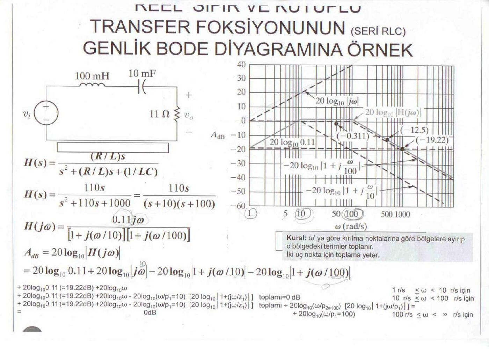
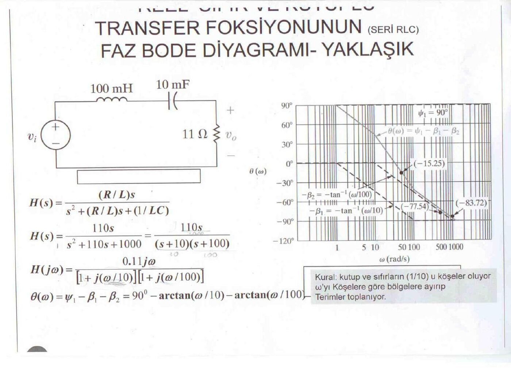

· EEM308
EEM308 Signals and Systems II: Example of Magnitude and Phase Bode Plots for a Series RLC Circuit (Slide Printout of Unknown Source)
EEM308 – Sinyaller ve Sistemler II · 22.03.2015 · 16.10.2026
This post presents a scan of a two-page printed slide handout that explains the Bode plot through a series RLC circuit example, stored in the EEM 308 Signals and Systems II folder. The document does not state who wrote the Turkish slides; the file name ("selda") and the other documents in the same folder suggest that the handout may come from the slides of the course instructor, Asst. Prof. Dr. Selda Güney. The circuit and the plots match the figures of the Bode plot example in Nilsson & Riedel's Electric Circuits. There are a few pencil marks on the pages. The scanned PDF can be downloaded at the end of the post.
This content belongs to a third-party source; it is shared for archival and nostalgic purposes with attribution. It will be removed at the request of the rights holder.
Magnitude Bode plot of a transfer function with a real zero and real poles
Circuit: a source v_i in series with L = 100 mH, C = 10 mF and R = 11 Ω; the output v_o is the voltage across the resistor.
H(s) = (R/L)s / (s² + (R/L)s + 1/LC)
H(s) = 110s / (s² + 110s + 1000) = 110s / ((s + 10)(s + 100))
H(jω) = 0.11 jω / ([1 + j(ω/10)] [1 + j(ω/100)])
A_dB = 20 log₁₀ |H(jω)| = 20 log₁₀ 0.11 + 20 log₁₀ |jω| − 20 log₁₀ |1 + j(ω/10)| − 20 log₁₀ |1 + j(ω/100)|
The corner frequencies are ω = 10 rad/s and ω = 100 rad/s. The asymptotic curve is summed region by region as follows:
| Region | Active terms | Asymptote |
|---|---|---|
| 1 ≤ ω < 10 rad/s | 20 log₁₀ 0.11 + 20 log₁₀ ω | +20 dB/decade; ≈ −19.2 dB at ω = 1 |
| 10 ≤ ω < 100 rad/s | 20 log₁₀ 0.11 + 20 log₁₀ ω − 20 log₁₀ (ω/10) | 20 log₁₀ 1.1 ≈ 0.8 dB, approximately 0 dB (flat) |
| 100 ≤ ω < ∞ | the above − 20 log₁₀ (ω/100) | −20 dB/decade |
Actual values marked on the plot: −0.311 dB at ω = 50 rad/s, −12.5 dB at ω = 500 rad/s, −19.22 dB at ω = 1000 rad/s.
Rule: The ω axis is divided into regions according to the break points, and the terms active in each region are summed. For the two end points, summation is sufficient.

Note: In the bottom lines of the slide, 20 log₁₀ 0.11 is written as "= 19.22 dB"; the correct value is 20 log₁₀ 0.11 ≈ −19.17 dB. The −19.22 dB on the plot is the actual value at ω = 1000 rad/s: |H(j1000)| = 110 / (√(1+100²)·√(1+10²)) ≈ 0.1094 → −19.22 dB. Also, the word "FOKSİYONUNUN" in the title should be "fonksiyonunun" (a Turkish typo for "of the function").
Phase Bode plot (approximate)
θ(ω) = ψ₁ − β₁ − β₂ = 90° − arctan(ω/10) − arctan(ω/100)
The jω term in the numerator contributes a constant ψ₁ = 90°; each pole adds a total of −90°, with a slope of −45°/decade, from one decade below its corner frequency (ω_k/10) to one decade above it (10ω_k). Actual values on the plot: −15.25° at ω = 50 rad/s, −77.54° at ω = 500 rad/s, −83.72° at ω = 1000 rad/s.
Rule: One-tenth (and ten times) of the poles and zeros form the corners; the ω axis is divided into regions according to the corners and the terms are summed.

Note: We checked the values: θ(50) = 90° − 78.69° − 26.57° = −15.26°, θ(500) = 90° − 88.85° − 78.69° = −77.54°, θ(1000) = 90° − 89.43° − 84.29° = −83.72°.